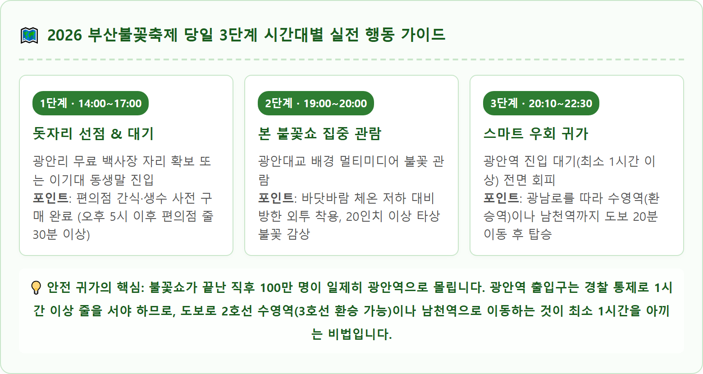
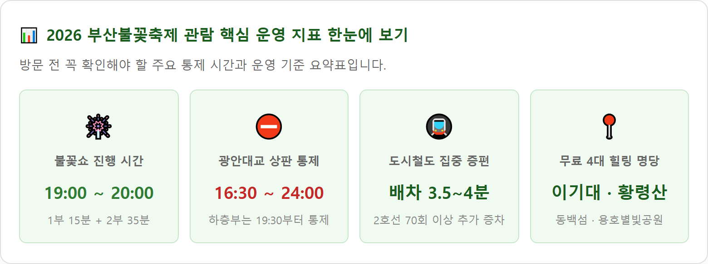

광안대교 밤하늘을 화려하게 수놓는 부산불꽃축제의 웅장한 멀티미디어 불꽃쇼 전경 / AI 제작 이미지
부산광역시가 주최하고 (사)부산문화관광축제조직위원회가 주관하는 부산불꽃축제는 광안대교의 유려한 조형미와 첨단 멀티미디어 조명, 웅장한 음악이 어우러지는 아시아 최고 수준의 해상 불꽃축제입니다.
2026년 행사는 2026년 11월 7일 토요일에 개최되며, 오후 2시부터 사전 버스킹 공연과 불꽃 토크쇼가 진행된 후 저녁 19:00 정각에 본 불꽃쇼의 막이 오릅니다.
| 시간대 | 프로그램 명칭 | 세부 내용 및 연출 포인트 |
|---|---|---|
| 14:00 ~ 18:00 | 사전 행사 (불꽃 버스킹) | 광안리 백사장 특설무대 라이브 공연, 시민 참여 레크리에이션, 불꽃 라디오 사연 소개 |
| 18:00 ~ 19:00 | 불꽃 카운트다운 & 토크쇼 | 클래식·재즈 음악 연주, 카운트다운 불꽃 예고 연출 |
| 19:00 ~ 19:15 (1부 15분간) |
해외 초청 불꽃쇼 | 세계적인 불꽃 디자인 연출사의 예술적이고 클래식한 테마 불꽃 연출 |
| 19:15 ~ 19:25 (10분간) |
인터미션 (휴식) | 광안대교 미디어파사드 연출, 2부 메인 테마 안내 방송 |
| 19:25 ~ 20:00 (2부 35분간) |
부산 멀티불꽃쇼 ★ 메인 하이라이트 |
25인치 초대형 타상 불꽃, 광안대교 1km 나이아가라 폭포 불꽃, 변색 불꽃 및 컬러 이과수 폭포 연출 |
| 20:00 ~ 20:05 | 땡큐 커튼콜 불꽃 | 엔딩 음악과 함께 시민 환송 소형 불꽃 연출 |
축제 당일 광안대교와 해변 인접 도로는 극심한 인파 밀집으로 인한 안전사고를 예방하기 위해 전면 통제됩니다. 차량을 이용한 진입은 절대 불가능하므로 반드시 통제 일정을 숙지해야 합니다.
축제 당일 오후부터는 광안리 일대 공영주차장과 사설주차장 진입이 전면 차단되며, 갓길 불법 주정차는 예외 없이 즉각 견인 조치되므로 자가용 이용은 엄격히 금지됩니다.

부산교통공사는 축제 당일 관람객 수송을 위해 도시철도 1~4호선 운행을 대폭 확대합니다.
행사 당일 총 240회 이상 열차가 증편 운행되며, 특히 메인 노선인 부산 도시철도 2호선은 퇴장 시간대인 20:00~22:30 사이에 배차 간격을 평소 6~8분에서 3.5분~4분 간격으로 대폭 단축하여 집중 배차합니다.

축제가 끝나는 20시 정각, 백사장에 모여 있던 수십만 명의 인파가 좁은 골목길을 통해 광안역으로 일제히 쏟아져 나옵니다. 이때 광남로 일대는 병목 현상이 발생하여 횡단보도 하나를 건너는 데만 20분 이상 소요됩니다.
가장 빠르고 안전한 귀가 동선은 해변 도로를 벗어나 수영로 방면으로 우회 보행하는 것입니다.
| 이동 경로 | 도보 거리 / 시간 | 노선 특징 및 장점 |
|---|---|---|
| 수영역 방면 (추천 1순위) 광안리 동측 (민락동 방면) |
약 1.5km 도보 약 20~25분 |
2호선과 3호선 더블 역세권. 연산동, 덕천, 구포 방면 및 동래구 거주자에게 최적. 광안역 대비 탑승 대기 시간 40분 이상 단축 |
| 남천역 방면 (추천 2순위) 광안리 서측 (삼익비치 방면) |
약 1.2km 도보 약 18~20분 |
서면, 사상, 부산역 방면 관람객 분산 동선. 남천동 빵골목을 지나며 여유로운 이동 가능 |
| 광안역 방면 (절대 비추천) 해변 중앙 진입로 |
약 800m 도보 1시간 이상 소요 |
극심한 인파 밀집으로 경찰의 펜스 통제 및 진입 제한 발생. 압사 위험 및 대기 피로 극심 |
부산불꽃축제는 백사장 중앙 일부 구간에 한해 유료 관람석을 운영하고 있습니다.
모래사장의 혼잡을 피하면서도 광안대교 불꽃쇼를 한눈에 담을 수 있는 부산 시민들의 숨은 무료 명당 4곳을 소개합니다.
• 이기대 동생말 (남구 용호동): 광안대교를 우측 측면에서 사선으로 바라보는 최고의 명당입니다. 광안대교와 해운대 마린시티의 마천루 야경이 한 프레임에 담겨 전문 사진작가들이 가장 선호하는 출사 포인트입니다.
• 황령산 봉수대 (부산진구/연제구): 해발 427m 정상에서 광안리 앞바다와 부산 시내 전체의 야경을 파노라마로 내려다보는 천혜의 조망처입니다. 불꽃 소리는 다소 늦게 전달되지만 하늘 높이 솟구치는 타상 불꽃을 시원하게 조망할 수 있습니다.
• 해운대 동백섬 선착장 & 누리마루 APEC하우스: 마린시티 해안 데크를 따라 동백섬 입구로 들어가면 광안대교 좌측 측면이 정면으로 보입니다. 해운대 지하철역과 인접해 있어 축제 종료 후 귀가가 상대적으로 수월합니다.
• 용호별빛공원 (구 용호부두): 최근 친수공간으로 재단장된 해변 공원으로, 탁 트인 시야에서 불꽃쇼를 여유롭게 감상할 수 있어 가족 단위 관람객에게 인기가 높습니다.
11월 초순의 부산 바닷가는 해가 지면 체감온도가 급격히 영하권 가깝게 떨어집니다. 장시간 야외 대기를 버티기 위한 방한 장비는 필수입니다.
불꽃축제 당일 광안리 오션뷰 호텔과 에어비앤비는 수개월 전부터 전 객실이 매진되며, 일부 업소의 터무니없는 바가지요금(1박 70만~100만 원 요구)이 기승을 부립니다.
부산시는 불꽃축제 기간 합동 점검반을 운영하여 숙박업소 바가지요금 및 부당 예약 취소를 집중 단속하고 있습니다.
무리하게 광안리 해변 숙소를 예약하기보다는, 지하철 2호선으로 15분 거리인 서면역 인근 호텔이나 3호선 연산역 비즈니스 호텔을 예약하고 지하철로 이동하는 편이 합리적인 가격과 쾌적한 시설을 모두 챙길 수 있는 스마트한 대안입니다.
대규모 인파가 운집하는 축제인 만큼 비상 상황에 대비한 종합상황실 위치를 사전에 확인해 두어야 합니다.
• 종합안내소 및 현장 응급의료소: 광안리 만남의광장과 수영구청 앞, 삼익비치 아파트 입구 등 4곳에 응급의료 부스와 구급차가 상시 대기합니다.
• 미아보호소 및 분실물 센터: 광안리 관광안내소(만남의광장 인근) 1층에 설치되어 미아 방지 팔찌 배부와 미아 방송을 지원합니다. 어린이를 동반한 부모님은 백사장 입장 직후 반드시 미아 방지 팔찌를 착용시키세요.
• 임시 화장실 위치: 기존 해변 공중화장실 외에 민락해변공원과 남천동 방면 등에 대형 이동식 화장실이 추가 설치되지만 대기 줄이 길 수 있으므로, 입실 전 인근 상가나 지하철역 화장실을 미리 이용하는 것이 좋습니다.